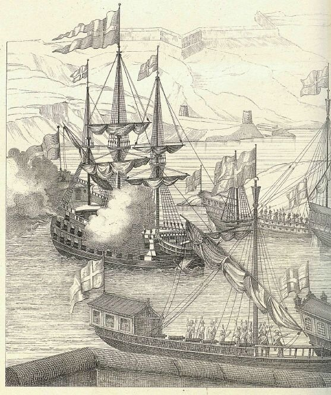
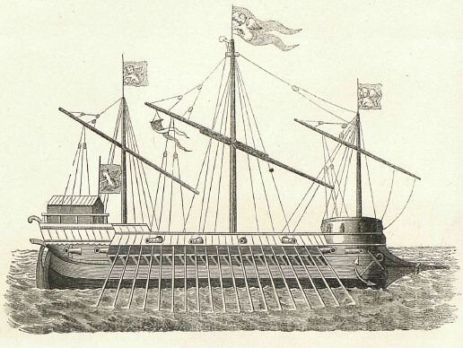
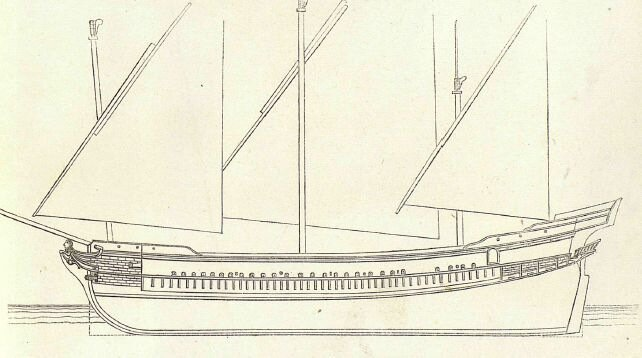

Русская профессиональная военно-морская лексика начала формироваться в X–XI вв. на основе русской и заимствованной военной и морской лексики. В качестве терминологической системы она оформилась в конце XVII–XVIII вв. Как считает профессиональная исследовательница военно-морского языка, Л.В. Горбань, для языка военных моряков характерны языковая экономия и ярко выраженная экспрессия. Военно-морская лексика активно проникает в общенациональный язык, являясь одним из источников его пополнения.
И.К Сморгонский, проанализировав существующие в нашем морском языке термины нерусского происхождения, разбил их на следующие группы:
I. термины, появившиеся в Х и начале XI века, греческого происхождения.
II. термины, появившиеся во второй половине XVII века (1667-1670 гг.) голландского происхождения.
III. термины, появившиеся на рубеже XVII и XVIII вв. и в первой четверти XVIII в., голландского и английского происхождения (за малым исключением)
IV. термины, заимствованные в разное время, итальянского, немецкого, английского и др. происхождения.
Первый из отмеченных выше исторических периодов отвечает сношениям русских с Византией. В летописях мы встречаем термины, существующие и в настоящее время: корабль, парус, якорь. Эти термины либо могли быть заимствованы непосредственно у греков, либо наложились на ранее существовавшие, созвучные им древнерусские слова.
Подобного рода наслоения мы встречаем и в дальнейшем. Так в начале XVIII в. наряду с ранее существовавшим термином райна (и рая) появляется термин рей, с голландского Ree, Raa. Но наряду с таким же термином галея появляется термин галера с итальянского galera. Заимствовав в начале XVIII в. голландский термин рур, который далее превратился в руль, мы в составных словах рудерпост и рудерпис уже восприняли английское рудер от Rudder в значении руль.
Формирование лексики на II и III этапах шло бурно, но во многом стихийно. Как заметил академик А.Н.Крылов, большая часть терминов, относящихся к оснастке корабля, взята из голландского языка, кораблестроительные же термины по большей части английского происхождения, хотя те и другие введены главным образом Петром I. Возможно, что это произошло потому, что Петр взял «Морской Устав» с голландского, а впоследствии в кораблестроении следовал английским образцам. (Английское влияние на наше кораблестроение, раз укоренившись, продолжалось почти 200 лет.)
Не ставя сейчас целью охватить всю тему зарождения военно-морской терминологии, приведу лишь некоторые наблюдения С.Елагина над этим процессом в период строительства в России Азовского флота («до начала правильной постройки судов в 1698 г.».)
Морскую терминологию того времени, считает Елагин, определить решительно невозможно: встречаются изредка термины голландские, но можно смело заключить, что в эпоху «назначенных» Петром, временных моряков не было настоящей морской терминологии, а употреблялась произвольная. «Галеры и иныя суда, по указу вашему строятся», - писал Петр Ромодановскому 23 марта 1696 года, - «да ныне же зачали делать на прошлых неделях два галеаса». На самом деле, новопостроенный флот состоял из двух кораблей, 23 галер, и четырех брандеров. Галеасы успешно проявившие себя впервые в битве при Лепанто (1571 г.), просуществовали всего до первой четверти ХVІІ в.

По мнению О.Жаля, последним галеасом владела Венеция. По распоряжению адмирала австрийского флота Паулучи, с его модели был снят чертеж.

Сравнение этих изображений (даже не ручаясь за точность изображения Апостола Петра, более того, даже высказывая сомнение в присутствии второго закрытого дека), можно твердо заключить, что между кораблем Апостол Петр и галеасом не было ничего общего. Елагин считает, что название галеас дано 36-пушечному Апостолу Петру совершенно неправильно. Оно существовало недолго, не более трех лет. С 1699 года и Апостол Петр и Апостол Павел называются уже кораблями. Авторы пятитомной «Истории отечественного судостроения» (1994 г.) относят его к классу парусно-гребных фрегатов, не обосновывая, впрочем, этого мнения.
Путаница произошла и с названием галер. Хотя в письмах Петра употреблялся термин галера, однако мастера Воронежской верфи в переписке назвали эти корабли каторгами, а затем к ним стали применять название фуркаты, «за которое, – пишет Елагин, – крепко стояли азовские воеводы и другие начальные люди, заведовавшие судами, до сдачи их действительным морякам». В примечаниях Елагин пытается объяснить происхождение этого термина: «Fourcat (отъ слова fourche—вила) острый флортімберсъ; Forkats (арабское слово, употребляемое на сѣверномъ берегу Африки) люгеръ; Forçat, каторжникъ, галерный невольникъ; итальянск. Forzato, sforzato; турецк. Forca;—вотъ слова, которыя повидімому могли служить корнемъ слова фуркатъ.» Слово это впервые появляется в Воронеже в марте 1696 года в требованиях де Лозьера. В письмах Петра к Кревету от 23 июня о турецких судах сказано: «три каторги, четырнадцать фуркатовъ». О полной неразберихе с терминами можно судить по следующей отписке азовского воеводы князя Прозоровского: «велѣли отпустить мы десять фуркатовъ, а каторгъ, Государь, въ Азовѣ никакихъ нѣтъ». В отписке стряпчего Хрущова князю Прозоровскому от 3 августа того же года сказано: «велѣно мнѣ взять у тебя десять каторгъ, a по твоему боярскому приказу, вмѣсто десяти каторгъ, десять фуркатовъ, что въ росписи князя Оболенскаго написаны галеры».
Импровизированные флагманы, сухопутные капитаны и солдаты могли ознакомиться с названием частей рангоута и такелажа от корабельного мастера капитана Августа Мейера, который после спуска корабля Апостол Петр остался на нем командиром, от преображенских солдат, переяславских моряков, бывавших в Архангельске, а следовательно и на Белом море, а также от 38 иноземных матросов и одного штурмана, нанятых в Архангельске с торговых кораблей и прибывших в Воронеж в начале апреля. Отправившись домой после Азовского похода, они-то и должны были оставить попавшие в описные книги судов слова вант, кордель, фал, галс, шкот, и т. п., приводившие в недоумение азовское административное и военное начальство при проверке судового имущества. Описные судовые книги, составленные в 1698 г. подполковником Новиковым, в 1699 г. думным дворянином Иваном Ларионовым и в 1700 г. подполковником Жаворонковым, людьми, которые не только не были специалистами, но вовсе не были знакомы с морским делом, включают в себя описи множества незначительных и даже случайных корабельных принадлежностей. Когда же дело касается частей корабельного снаряжения, то встречаются наивные заметки вроде следующих: в описи корабля Апостол Петр 1698 г.: «Да на томъ же кораблѣ машты и райны и шеймы и канаты, и иныя веревки съ блоками и съ снастьми, а порознь тѣхъ припасовъ разобрать и указать не знаютъ»; в книгах галеры Принципіумъ между прочим значится: «гротъ-кордель съ фаломъ одинакимъ, гротъ-кордель съ фаломъ двойнымъ, два песпоръ, куфатъ" и т. д. За этим следует приписка: «а что писано выше сего гротъ-кордель съ фаломъ одинакимъ и двойнымъ и песпоръ, a no осмотру веревки съ блоки и съ шарами, да куфатъ по осмотру парусъ косой, а толь подлинно, того указать некому».
Так начинался наш военно-морской язык. О том, как удалось навести здесь порядок и о роли в этом деле бывшего третьего экипажмейстера амстердамского адмиралтейства, а в дальнейшем – русского адмирала Крюйса – в следующий раз.